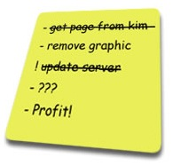
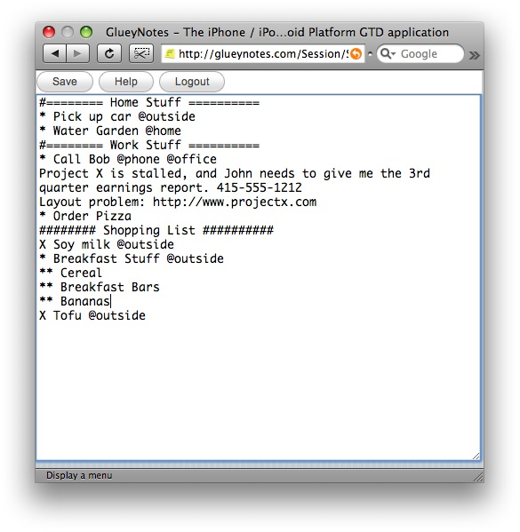
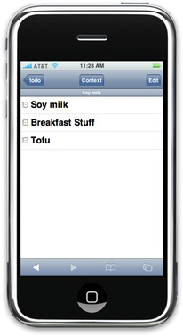
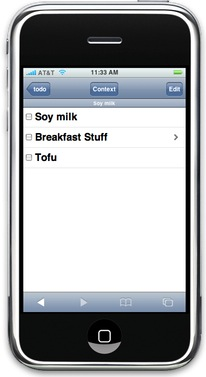
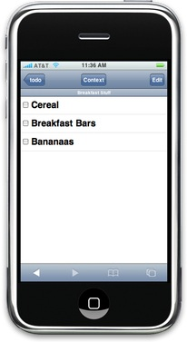
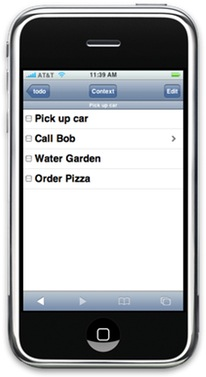
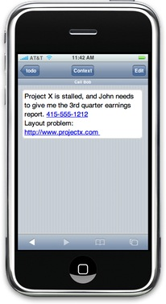
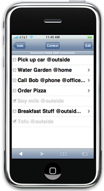

GlueyNotes
Introduction
Creating List Items
Creating Sub Items
Adding Item Detail
List Comments
Setting Contexts
Marking Items As Done
Introduction
GlueyNotes is a *Getting Things Done® list making web application for the **iPhone, **iPod Touch, and ***Google Android platform. It's goal is to help you make project task lists, and access the lists anywhere.
Creating List Items
List items are created in the list text editor screen. The web interface text editor can be accessed by logging into GlueyNotes.com with a desktop web browser, or by clicking the Edit button on the top right of the iPhone interface. The following is a screen capture of the web interface text editor from the desktop version of Safari.

Once viewing the list text editor, one can create a new list item by adding a line of text preceded by an asterisk (*). For example, to create a shopping list of items you could type:
* Soy milk
* Breakfast Stuff
* Tofu
The asterisk (*) must be the first thing on the line, and the line must not have any spaces or characters before the asterisk or GlueyNotes will not be able to tell it is a todo item.
After you have typed your list of items, click the Save button to save your changes on the server. You will get a confirmation in the top right corner of the page if there were no errors.
Your list is now ready for use. On your mobile device your list will look something like the following:

Creating Sub Items
To create sub items, add an additional level of asterisk to the start of the line. For example, to add items to Breakfast Stuff in our shopping list example we would do the following:
* Soy milk
* Breakfast Stuff
** Cereal
** Breakfast Bars
** Bananas
* Tofu
In a sense, you've just created a list in a list. You can continue adding levels of asterisks — or sublists — by adding another asterisk to the next todo item group.
GlueyNotes will display a chevron (>) to show that there are sublist items now attached to the Breakfast Stuff list item as seen in the following picture:

When you tap Breakfast Stuff list item, the screen will change to show the Breakfast Stuff list items as seen in the following screen capture:

To move back one level, simply press the browsers back button (located at the bottom of the screen on the iPhone). If you are several levels deep, you can press the Todo button at the top left of the screen to return to the very top level.
Adding Item Detail
Often, at least with my lists, more information is needed to complete a list item. For example using the following list, the list item Call Bob would be more helpful if it contained Bob's phone number and some detail on what I need to discuss with Bob.
Adding details to list items in GlueyNotes is very simple. Directly below the list item, type the text you would like to see regarding that item. For example:
* Pick up car
* Call Bob
Project X is stalled, and John needs to give me the 3rd quarter earnings report. 415-555-1212
Layout problem: http://www.projectx.com
* Water Garden
* Order Pizza
In other words, item details in GlueyNotes start at the beginning of the line, and belong to the list item directly above them.
When you look at your list on your mobile device, the chevron will show up for any items that have detail information as seen in the picture below:

To access the detail information, you tap the list item (in this example the Call Bob item), and you will see the detail information that is associated with that item (seen below).

You'll also notice that the telephone number and URL became active.
List Comments
Todo lists can get long. When using the mobile device interface it's easy to see where a list starts and where it ends. However, when using the web text interface, sometimes where the lists start and end is not as clear. Visually breaking up the list with comments can be a helpful way to denote sections.
To allow for section marking and other miscellaneous information, GlueyNotes supports list comments. List comments are lines that are ignored by the GlueyNotes parser and mobile device interface. You can create a list comment by adding a hash mark (#) to the start of the line. For example:
#======== Home Stuff ==========
* Pick up car
* Water Garden
#======== Work Stuff ==========
* Call Bob
Project X is stalled, and John needs to give me the 3rd quarter earnings report. 415-555-1212
Layout problem: http://www.projectx.com
* Order Pizza
######## Shopping List ##########
* Soy milk
* Breakfast Stuff
** Cereal
** Breakfast Bars
** Bananas
* Tofu
Using a list comments is a great way to mark your lists with more information. It's helpful to use comments for Information that is unnecessary to the list items themselves, and do not need to show up on the mobile device display.
Setting Contexts
List items can also have contexts. Contexts denote the situation where you are most likely to do the task. For example, you couldn't make a phone call without a phone, and you couldn't lookup a web site address without a computer.
To set a context on a list item, simply type an at sign (@), and then the context name. Contexts cannot have spaces in them, but you can make up as many contexts as you like. For example, here is a list with some contexts added:
#======== Home Stuff ==========
* Pick up car @outside
* Water Garden @home
#======== Work Stuff ==========
* Call Bob @phone @office
Project X is stalled, and John needs to give me the 3rd quarter earnings report. 415-555-1212
Layout problem: http://www.projectx.com
* Order Pizza
######## Shopping List ##########
* Soy milk @outside
* Breakfast Stuff @outside
** Cereal
** Breakfast Bars
** Bananas
* Tofu @outside
Then when using the mobile device, you can click the Context button and display all the items in a particular context.
This is a helpful feature to get a quick list of all the things you need to do based on your real world location. Meaning, if you are standing at the store, showing the store context would give you a list of all the things you need to do right there.
Marking Items As Done
To mark an item as completed, simply tick the box on the mobile device interface (as seen below)

The completed item fades out, and will eventually stop showing your list.
When an item is marked as completed, it replaces the item's first asterisk (*) with an X. Using the example from the picture above, our list now looks like the following:
######## Shopping List ##########
X Soy milk @outside
* Breakfast Stuff @outside
** Cereal
** Breakfast Bars
** Bananas
X Tofu @outside
A list item is never permanently deleted via the mobile device version of GlueyNotes, you must delete the line yourself from the text interface. This allows you to reuse, and fine tune lists you use repeatedly. It also provides a fail safe if you accidentally tick a list item.
Copyright 2007-2008 Rob Rohan. All Rights Reserved
* Getting Thing Done® is a trademark of David Allen & Co.
**iPhone and iPod Touch are trademarks of Apple Inc.
***Google Android is trademark Google.